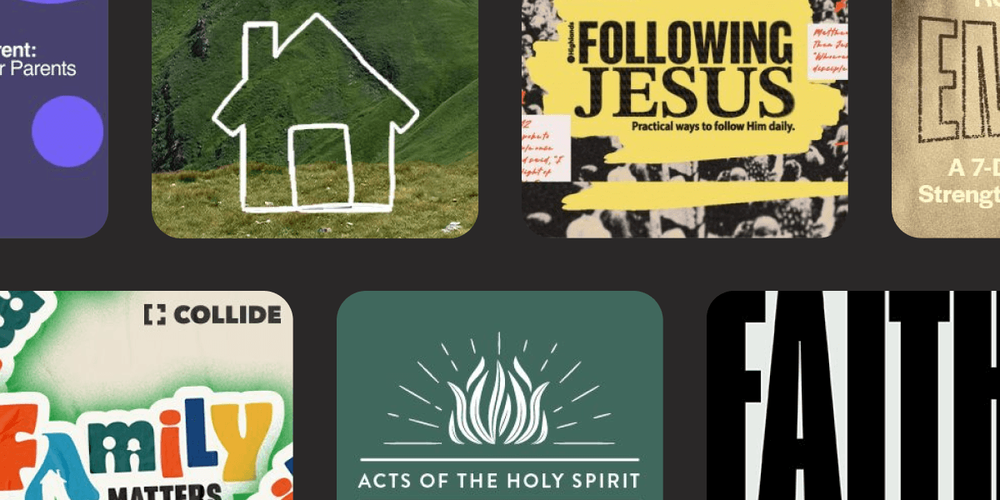
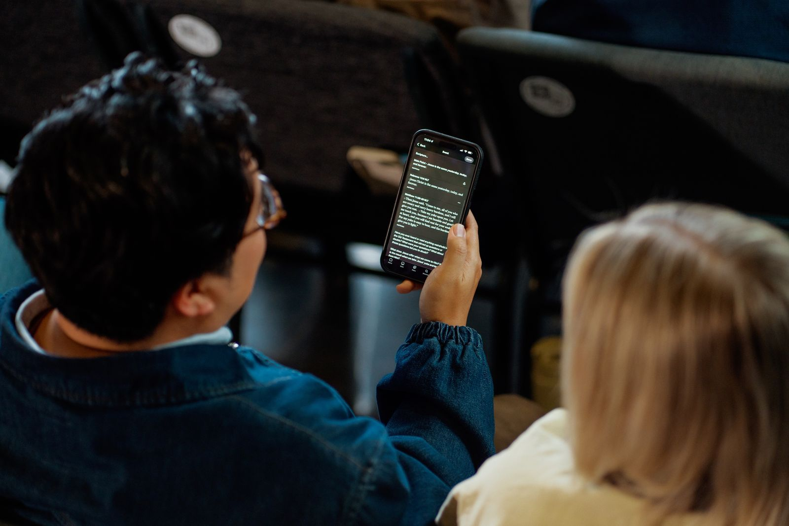
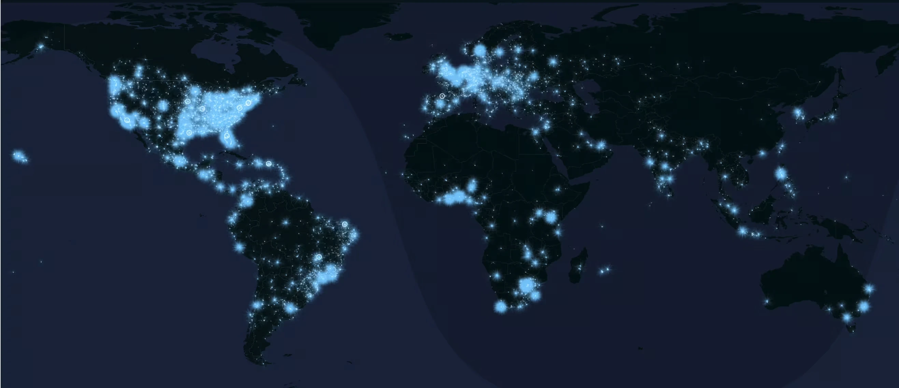
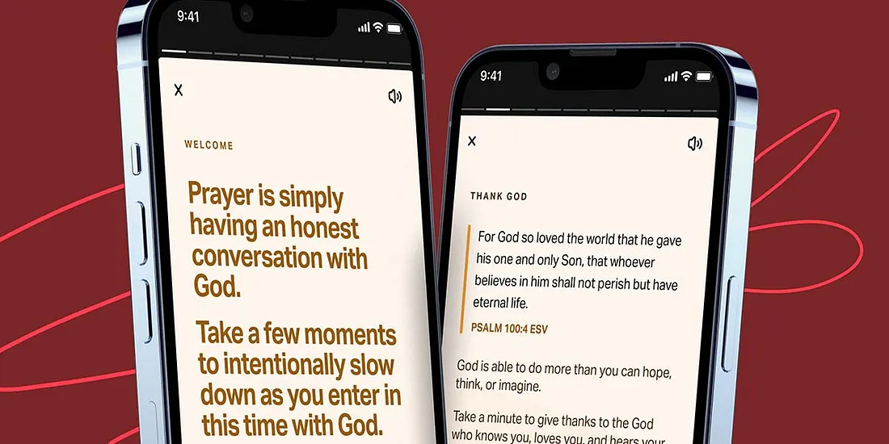
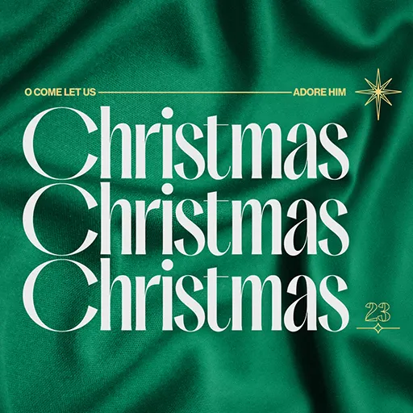

Get announcements, product updates, and feature launches to help you make the most of your ministry with Vision School.
The Bible App is designed to help your church gather around the Word and grow closer to God together.




